Module (6) JAVASCRIPT BASIC & DOM
Q.1 What is JavaScript. How to use it?
JavaScript is a scripting language.also known as single threated language. which manuplutes the Dom(Document object Model).
Q.2 How many type of Variable in JavaScript?
There are 3 types of variables in js.
- var
- in var we can redeclare and reasign a variable.
- let
- in let we can not redeclare a variable.but we can reasign a value to a variable
- const
- in const we can not redeclare a variable.and we can not reasign a value to a variable
Q.3 Define a Data Types in js?
Two types of Datatypes
1.premetive
- Number
- Null
- Symbol
- String
- Undefined
- BigInt
- Boolean
2.non-premetive
- Array
- Object
Q.5 What the deference between undefined and undeclare in JavaScript?
Undefined means variable is declared but value is not assigned to it.
undeclared means not declared anywhere in whole JavaScript.
Q.6 Using console.log() print out the following statement: The quote 'There is no exercise better for the heart than reaching down and lifting people up.' by John Holmes teaches us to help one another.
consol.log("There is no exercise better for the heart than reaching down and lifting people up.")
Q.7 Check if typeof '10' is exactly equal to 10. If not make it exactly equal?
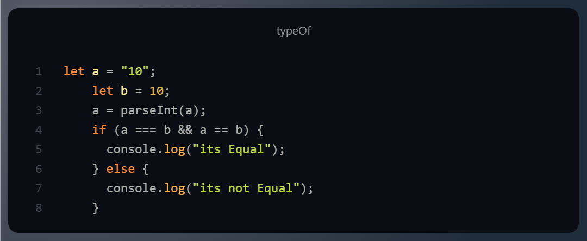
Q.8 Write a JavaScript Program to find the area of a triangle?
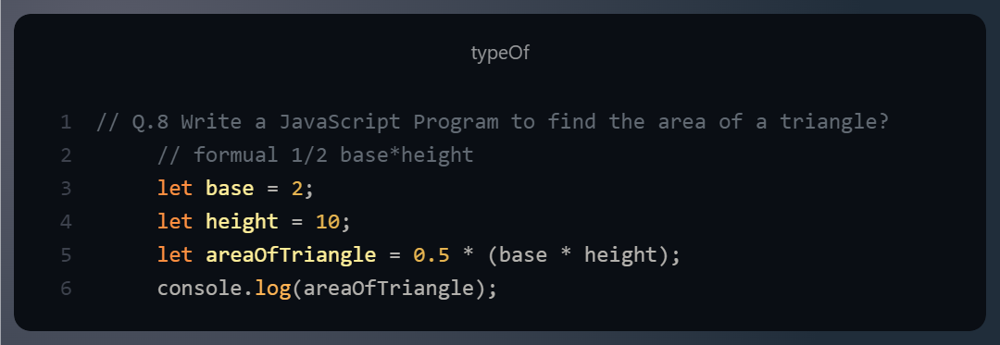
Q.9 Write a JavaScript program to calculate days left until next Christmas?
Q.10 What is Condition Statement?
Conditional statements in Programming, also known as decision-making statements, allow a program to perform different actions based on whether a certain condition is true or false.
Following are the condiotions in js :
1.if
2.if else
3.if else if
4. switch case
Q.11 Find circumference of Rectangle formula : C = 4 * a ?
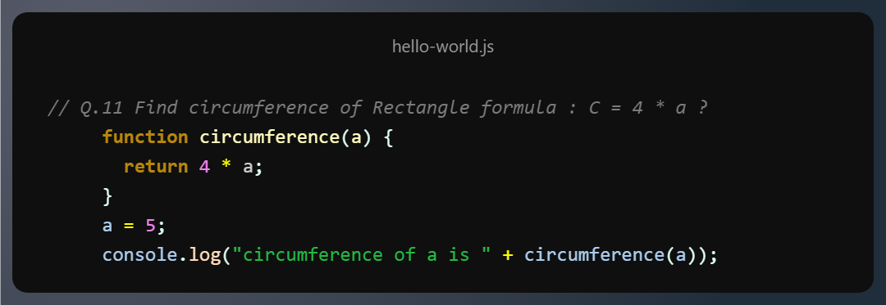
Q.12 WAP to convert years into days and days into years?
Q.13 Convert temperature Fahrenheit to Celsius?
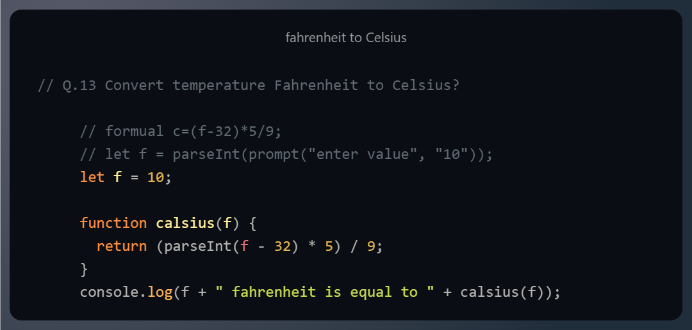
Q.14 Write a JavaScript exercise to get the extension of a filename.?
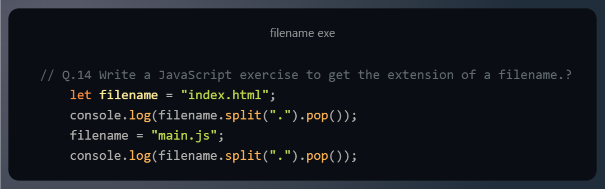
Q.15 What is the result of the expression (5 > 3 && 2 < 4)?
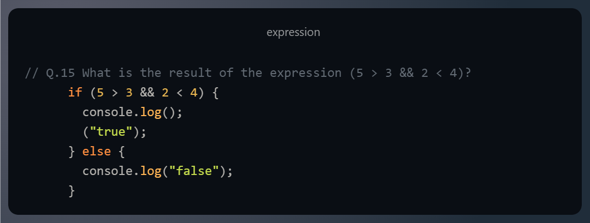
Q.16 What is the result of the expression (true && 1 && "hello")?
Q.17 What is the result of the expression true && false || false && true? Q
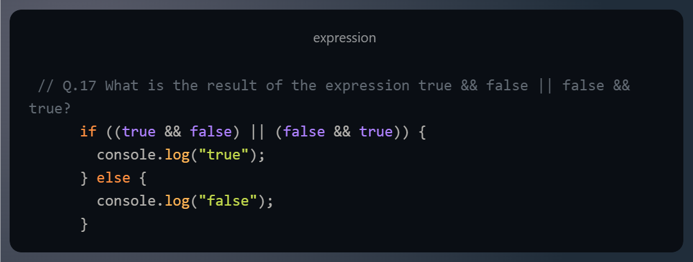
Q.18 What is a Loop and Switch Case in JavaScript define that ?
- for loop
- for of
- for in
- while
- do while
Q.19 What is the use of is Nan function?
to whether its number or not
Q.20 What is the difference between && and || in JavaScript?
following is the difference between && and ||:
&&: true && true = true
true && false = false
fasle && false = false
false && true = false
||: true || true = true
true || false = true
fasle || false = false
false || true = true
Q.22 Check Number Is Positive or Negative in JavaScript?
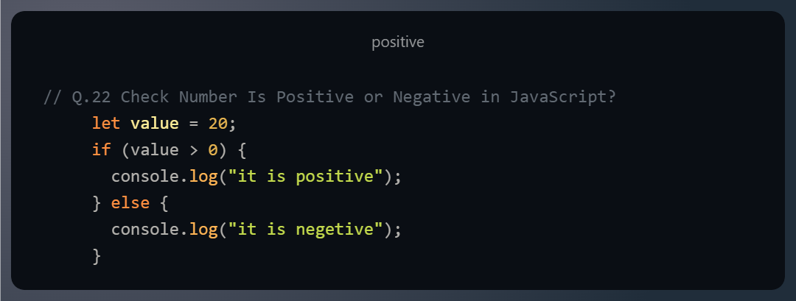
Q.23 Find the Character Is Vowel or Not ?
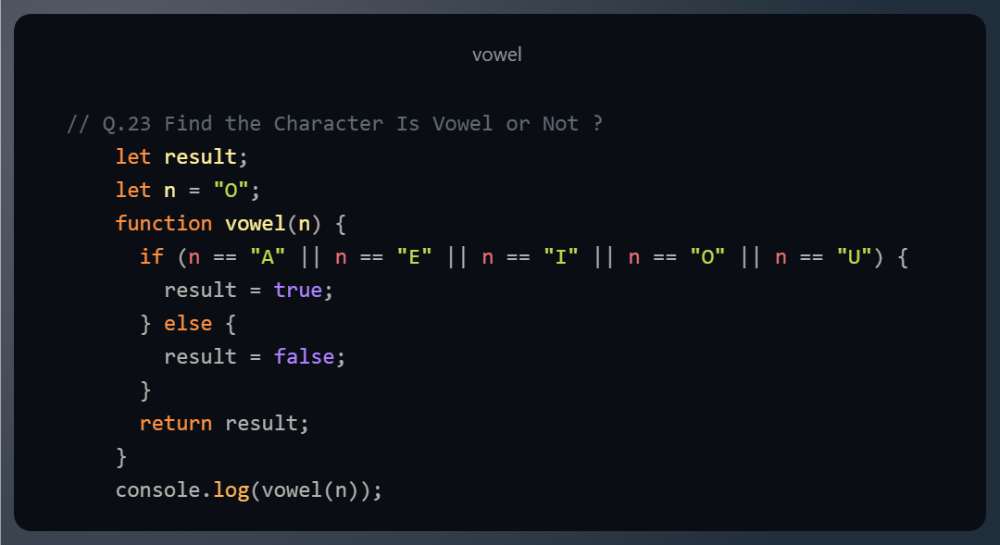
Q.24 Write to check whether a number is negative, positive or zero?
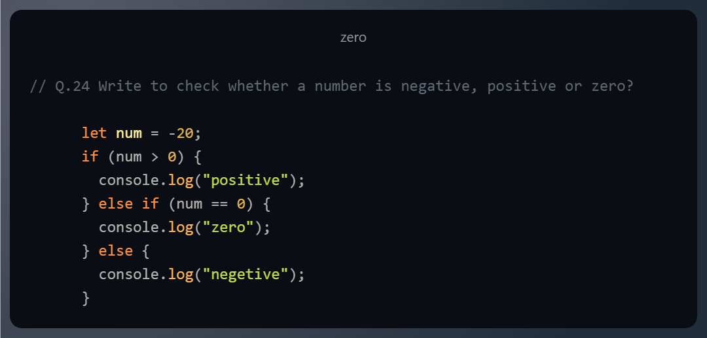
Q.25 Write to find number is even or odd using ternary operator in JS?
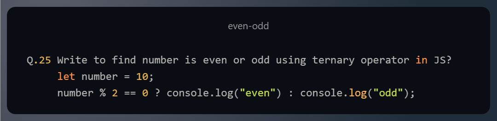
Q.26 Write find maximum number among 3 numbers using ternary operator in JS?
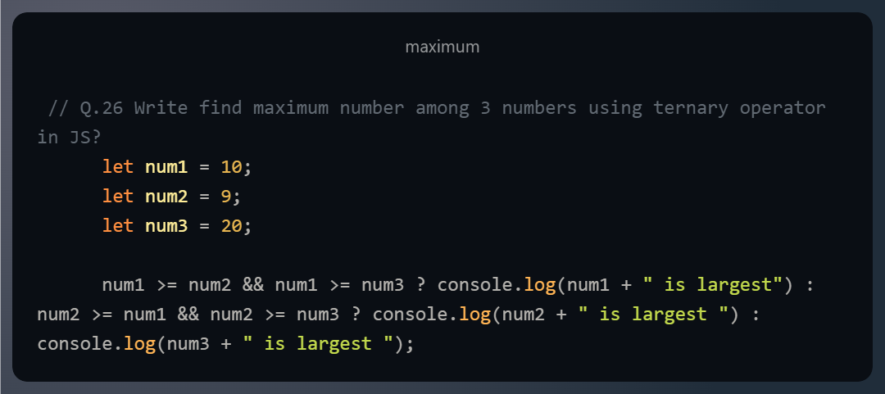
Q.27 Write to find minimum number among 3 numbers using ternary operator in JS?
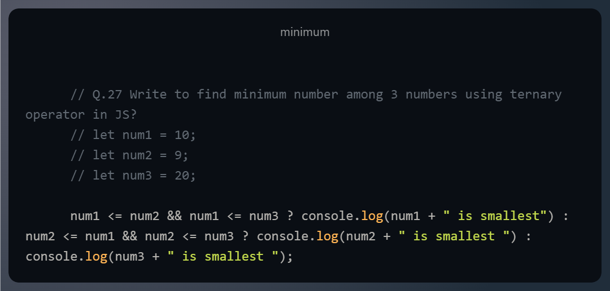
Q.29 Write to show
i. Monday to Sunday using switch case in JS?
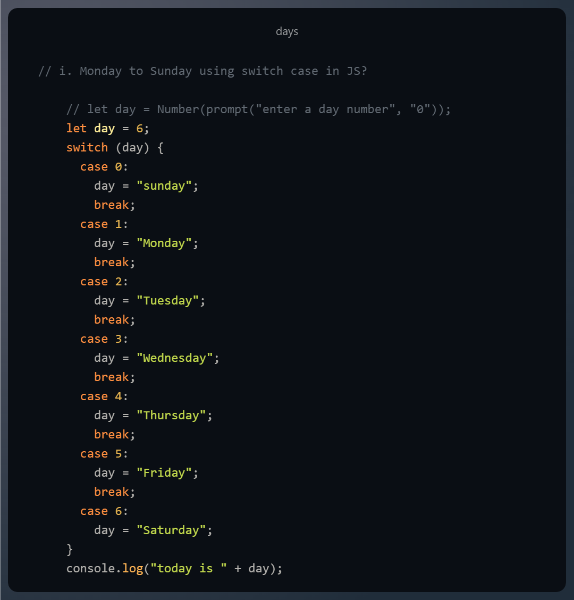
ii. Vowel or Consonant using switch case in JS?
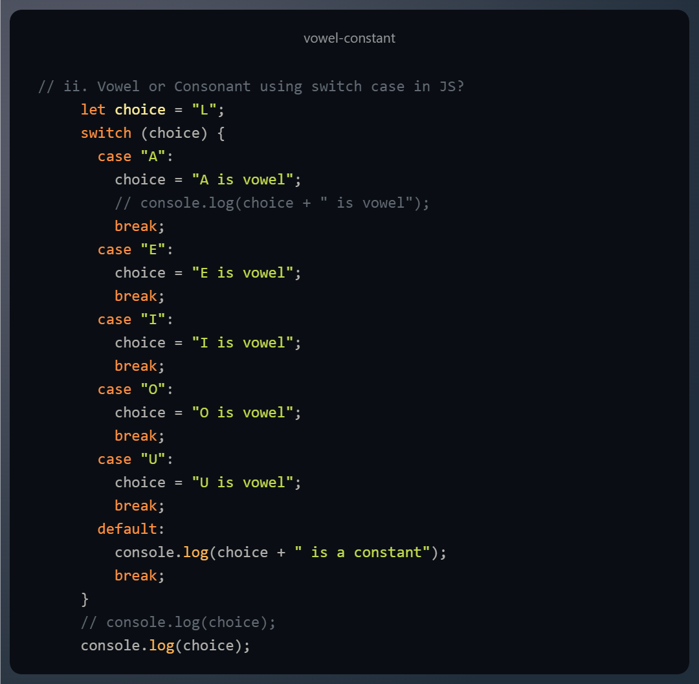
Q.30 What are the looping structures in JavaScript? Any one Example?